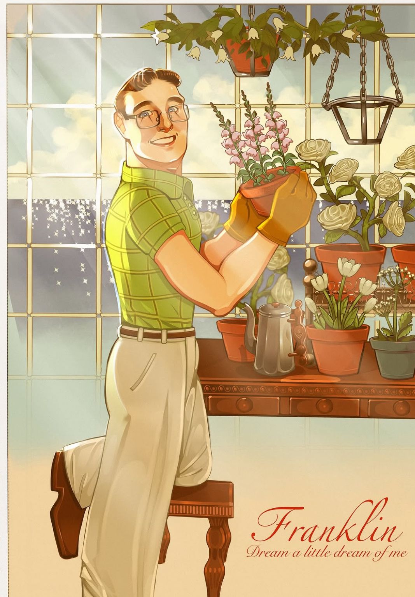

 |
Posso um dia..reviver o passado? - W
Stapford é um História de Amor Retro futurista. Ambientado no início da década de 60.
Flanklin, é um dos personagens que compõem a história, possuindo um papel fundamental para o desenvolvimento da narrativa.
1° capitulo “Cidade Solitária”